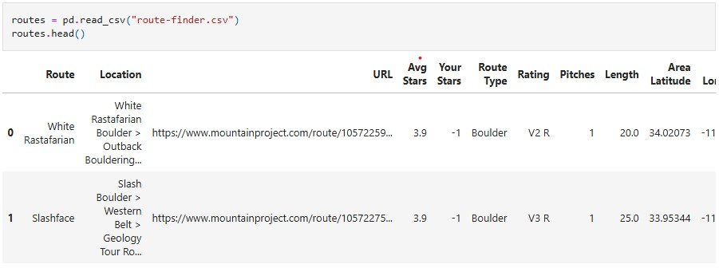
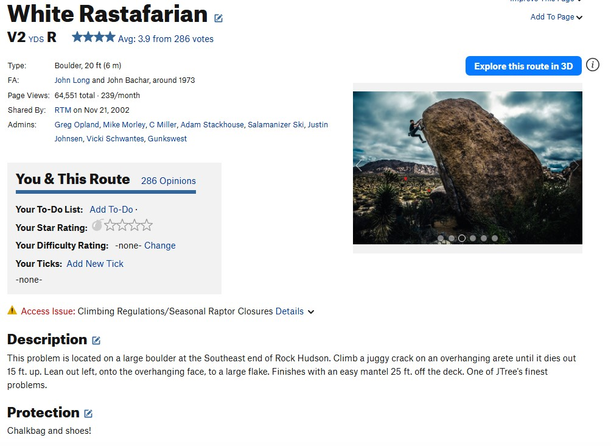
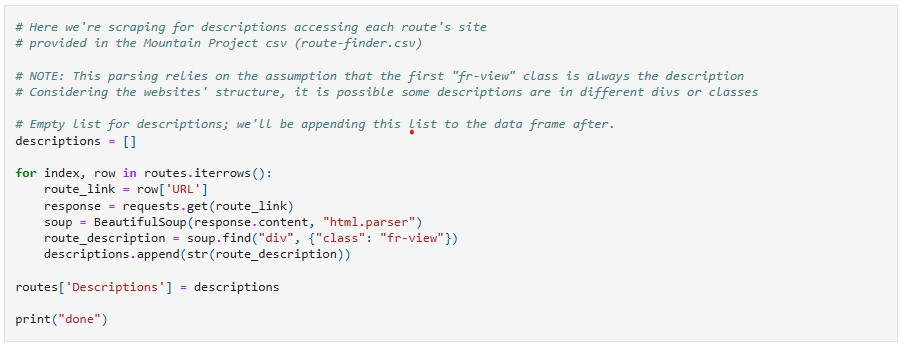
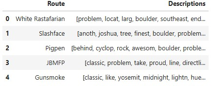
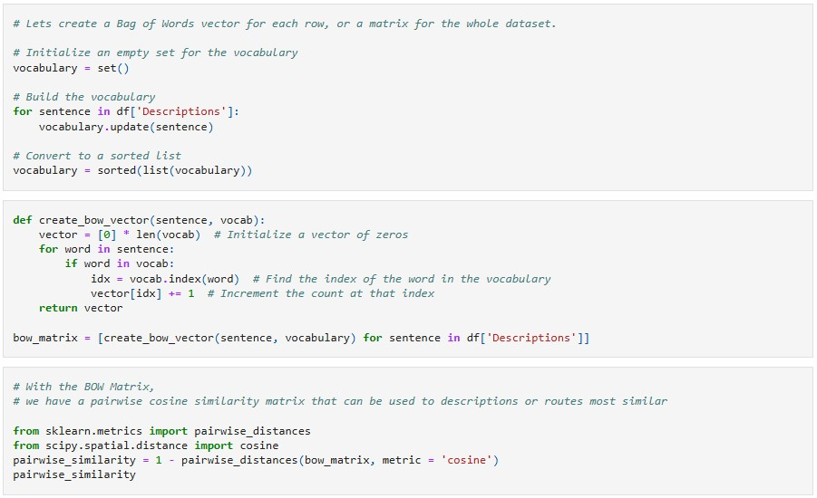
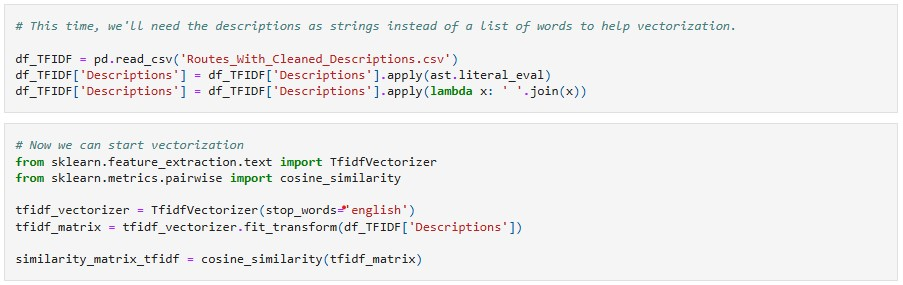
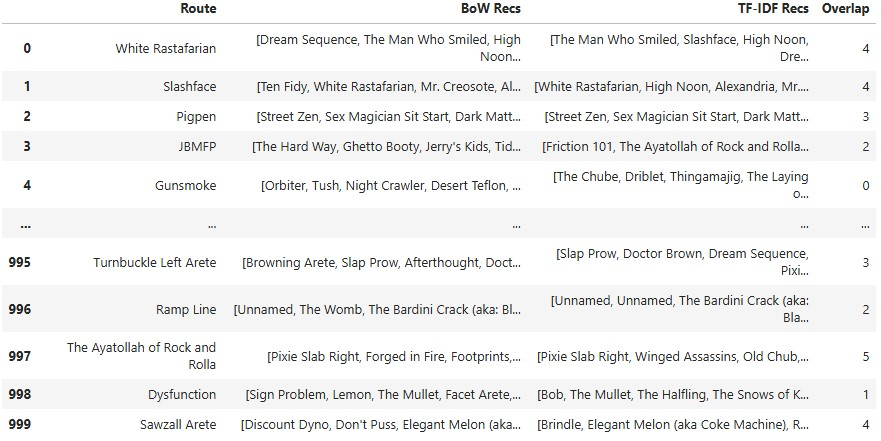

Joshua Tree National Park is a popular bouldering and sport climbing spot in Southern California, but deciding which routes to try may be difficult even for the seasoned climber.
The Joshua Tree Bouldering guidebook is a great catalog of the updated routes you can find, but manually searching may be tiring. Mountain Project is another popular database of routes supported by the community, and while it provides filters such as popularity and grade level, it may be hard to choose which routes you'd enjoy.
This recommendation system is aimed to provide a solution, recommending routes by finding those with similar descriptions!
Introducing the Data
The data used in this project was sourced from Mountain Project, as the site allows us to download a csv which contains 1000 routes from Joshua Tree Boulder. Let's take a look.
Conveniently, the routes-finder csv file provides links to each route, which we will use to extract the descriptions from using webscraping.
Below is an example page of a route.
Using Python's BeautifulSoup library, we scrape the descriptions from each route.
After some cleaning and preprocessing, we're left with a broken down form of the descriptions, exluding things like stop words.
Creating Our Model
I intend on using Cosine Similarity from the Scikit-learn Library in Python to aid us with creating similarity matrices.
Our first method to prepare our descriptions is by using Bag of Words to organize our descriptions, and then applying cosine similarity between each of the bags.
This similarity matrix outputs values between 0 and 1 which indicates how "similar" each bag of word is to another.
Our other method to prepare our descriptions is by using TF-IDF, or Term Frequency - Inverse Document Frequency, which vectorizes the words while considering their frequency to change the weight of each word in the document. This is important, as we noticed that some of our descriptions were quite short, meaning that it would be given as a recommendation solely because most of the words from the short descrption match with words on other descriptions.
Here is our TF-IDF implementation.
Results
After creating each similarity matrix and running a function that identifies the 5 most similar descriptions for each route, I compiled the data into a dataframe that displays recommendations for each route, seperated by the method used to create the similarity matrix. I also created an "over" column to see if the systems would provide similar recommendations.
Conclusion
While we have created recommendations, it is difficult to identify how "good" these recommendations are without an outside opinion, as recommendations are generally subjective. I personally took a look at a few route recommendations and visited each page on Mountain Project, and found that yes, some routes that are suggested are indeed similar and may have similar features or styles of climbing, but other times they could be quite different.
However, I think that the recommendations would probably fair better, or simply be more efficient in finding routes that one might want to try versus flipping through the guidebook or scrolling through Mountain Project.
In the end, nothing beats experience and word of mouth, but this system could prove to be helpful to guiding you toward exciting routes.
Thank you for reading! To view the full project, visit the project's GitHub repository.